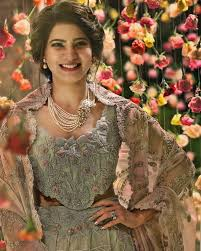

samantha
Samantha was born on 28 April 1987, her father Joseph Prabhu is Telugu and mother Ninette Prabhu is Malayali.[6] She was born and brought up in Chennai, Tamil Nadu,[7] as the youngest child of the family, with two elder brothers Jonath and David. She can speak both Tamil and Telugu fluently. [8][9] As a part of her education, Samantha was schooled at Holy Angels Anglo Indian Higher Secondary School and then completed a degree in commerce at Stella Maris College, Chennai.[8][10] Towards the end of her undergraduate degree, she became involved in modelling, notably working with Naidu Hall, through which she was first spotted by filmmaker Ravi Varman.